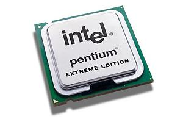

2.12.1. Общая характеристика процессоров
Универсальные компьютеры делятся на три функционально связанные аппаратные части: процессор, память и периферийные устройства.
Процессор — это основная функциональная часть компьютера, которая интерпретирует и выполняет команды, то есть непосредственно реализует программно-управляемый процесс обработки данных.
Процессор, выполняющий в вычислительной системе основные функции, называют центральным (ЦП). Специализированный процессор, предназначенный для управления внешними устройствами (накопителями, дисплеями, принтерами и т.д.) называют контроллером.
Процессор характеризуется архитектурой, к которой относят:
- список арифметико-логических операций (система команд);
- типы и форматы команд и данных;
- организацию адресного пространства памяти и периферийных устройств;
- способы адресации команд и данных;
- функции составных частей и структуру связей с другими устройствами машин;
- режимы работы.
Процессор состоит из устройства управления (УУ), арифметико-логического устройства (АЛУ) и блока интерфейса (БИФ) для соединения с внешней средой – памятью и периферийными устройствами (рис. 27.1).
Рис. 27.1. Структура процессора.
Обработка данных осуществляется в АЛУ, которое содержит арифметико-логический блок (АЛБ), блок РОН (регистры общего назначения), блок контроля (БК) и местный блок управления при децентрализованном управлении.
Арифметико-логический блок содержит универсальный двоичный комбинационный сумматор, двоично-десятичный сумматор или схему десятичной коррекции, регистры для временного хранения двух операндов и результата операций, а также регистр флажков. Для повышения производительности в АЛУ могут включать специализированные узлы сдвига и умножения, схемы ускоренного переноса и другие устройства. Ряд процессоров имеет по два и более АЛУ. Разрядность АЛУ определяет разрядность всего процессора.
В РОН хранятся исходные данные, промежуточные и конечные результаты, адреса данных, константы, необходимые в процессе выполнения команды. Все операции в АЛУ реализуются как пространственно-временные последовательности микроопераций над двоичными словами, каждая из которых является совокупностью булевых операций над битами слов. В АЛУ реализуются следующие типовые микрооперации:
- передачи слов между регистрами и регистрами и памятью;
- сложение двух слов, декремент (– 1) или инкремент (+ 1) слова;
- арифметические, логические и циклические сдвиги вправо или влево;
- поразрядные логические операции ИЛИ, И, исключающее ИЛИ и сравнение операндов;
- преобразование кодов слов — инверсия, дополнение, расширение и др.
Устройство управления (УУ) руководит процессом обработки данных, обеспечивает основные режимы работы (начальных установок, ожидания, прерывания, прямого доступа к памяти, диагностики и контроля) и взаимодействие всех устройств компьютера. Для выполнения этих функций УУ имеет в своем составе регистр и дешифратор команд, программный счетчик для задания адреса следующей команды, блок управления и схемы синхронизации, диагностики и контроля.
В состав процессора могут входить специальные системные средства: служба времени, средства межпроцессорной связи, пульт управления и др.
Устройство управления последовательно считывает код команды из памяти и размещает его в регистр команд (инструкций). Блок управления дешифрирует команду и формирует последовательности управляющих сигналов. Для выполнения одной микрооперации в АЛУ необходим один управляющий сигнал. В одном машинном такте реализуется совокупность микроопераций — микрокоманда. Множество микрокоманд образует микропрограмму команды. Каждая команда имеет свою микропрограмму, время выполнения которой называется командным циклом.
Различают аппаратные, микропрограммные и комбинированные блоки управления. Аппаратные блоки управления построены на основе схемной логики, а микропрограммные — программируемой логики (имеют память микропрограмм). Комбинированные блоки управления используют оба способа их реализации.
При централизованном управлении одно УУ руководит процессом обработки команд и данных во всей машине. При децентрализованном управлении УУ формирует основные управляющие сигналы, а обработкой данных управляет местный блок управления, расположенный в АЛУ.
Отметим, что все команды в компьютере реализуются на основе принципа микропрограммного управления, то есть выполнения микропрограмм. В то же время УУ с программируемой логикой также называют микропрограммными. Методологически эти понятия следует различать.